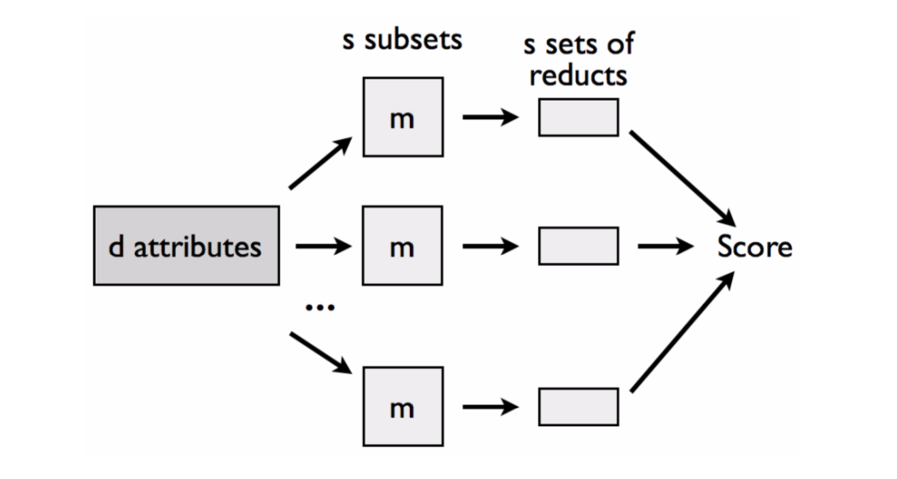

JA vs. 1TB
1 : 0

RandomReducts
\[FScore_i = \frac{ \sum_{k=1}^s \sum_{l=1}^{t_k} \mathbb{I}(a_i \in RED_{k,l}) } { \sum_{k=1}^s \mathbb{I}(a_i \in SUB_k) }\]
- \(s\) - liczba podzbiorów attrybutów
- \(t_k\) - liczba reduktów w \(k\)-tym podzbiorze
- \(RED_{k,l}\) - \(l\)-ty redukt w \(k\)-tym podzbiorze
- \(SUB_k\) - \(k\)-ty podzbiór attrybutów
MCFS

\[wAcc = \frac{ 1 }{ c } \sum_{i=1}^c \frac{ n_{ii} }{ n_{i1} + \dots + n_{ic} } \]
- \(n_{ij}\) - liczba przykładów z klasy \(i\) zaklasyfikowanych jako \(j\)
- \(i,j = 1, \dots, c\)
\[ RI_{g_k} = \sum_{\tau=1}^{st} wAcc^u \sum_{n_{g_k}(\tau)} IG(n_{g_k}(\tau)) \left( \frac{ \textrm{no. in } n_{g_k}(\tau) }{ \textrm{no. in } \tau } \right)^v \]
- \(\tau\) - drzewo
- \(g_k\) - attrybut
- \(n_{g_k}(\tau)\) - węzeł drzewa gdzie rozbicie na \(g_k\)
- \(\textrm{no. in } n_{g_k}(\tau)\) - liczba obiektów w węźle
- \(\textrm{no. in }(\tau)\) - liczba obiektów w korzeniu
Fast cutoff
\[ N = \underset{ n \in \{1, \dots, d \} }{ \textrm{argmin} } \left( \left( 1 - \frac{\sum_{k=1}^n Score_k}{\sum_{k=1}^d Score_k} \right)^2 + \left( \frac{n}{d} \right)^2 \right) \]
- \(N\) - liczba istotnych atrybutów
- \(Score_k\) - wynik \(k\)-tego atrybutu
- \(d\) - liczba wszystkich atrybutów

Wszystko zaczęło się...

Wszystko zaczęło się...
... rok temu
Policzenie RR na pojedynczym komputerze zajęło 9.2x dłużej niż MapReduce
!!!
184min vs. 20min
Eksperymenty tegoroczne
Test harness
10x ( 4x Intel Xeon E3-1220 @ 3.10GHz, 32GB RAM, 1TB HDD )
Test harness
Leukemia: 22,227 attr x 190 obj
Wynik referencyjny
Drzewo C4.5
- 81.58%
- 148 sec (wall clock)
- 22,227 attr
Reducts Standalone
- 69.47%
- 46 min 16 sec
- 3,516 attr
5000 podtablic, 150 atrybutów każda
Reducts MapReduce
- 69.47%
- 20 min
- 3,516 attr
Reducts Spark...
Reducts Spark
- 69.47%
- 9 min 7 sec
- 3,516 attr
Gdy nagle...
Bugi w Rseslibie
co najmniej 2 u Johnsona
private Collection<BitSet>
getAllCountedReducts(Vector<BitSet> discern_attrs){
HashSet<BitSet> reducts = new HashSet<BitSet>();
int[] startCount = getCountingAttributes(discern_attrs);
LinkedList<Integer[]> attributesList =
FindFirstAllMaximums(startCount);
(...)
return reducts;
}
Jeszcze raz
Reducts Spark
- 82.63%
- 2 min 24 sec
- 855 attr
Reducts MapReduce
- 82.63%
- 15 min 45 sec
- 855 attr
| Spark | MapRed | Standalone |
| 2 min 24 sec | 15 min 45 sec | 8 min 3 sec |
Drzewa
Cognitive Foundry
Trees Standalone
- 86.31%
- 143 min 27 sec
- 167 attr
Trees MapReduce
- 86.31%
- 30 min 14 sec
- 167 attr
Trees Spark
- 86.31%
- 20 min 5 sec
- 167 attr
| Ref | Reducts | Trees | |
| Acc | 81.58% | 82.63% | 86.31% |
| Attr | 22,277 | 855 | 167 |
| Time | 148 sec | 2 min 24 sec | 20 min 5 sec |
1TB
Demo
1TB = 512 attr x 1,048,576 obj
Generowanie zajęło 48 sec na Sparku
Reducts Spark
- 65 min 19 sec
- 14 attr
- 10,240 podtablic, 1024 atrybutów każda